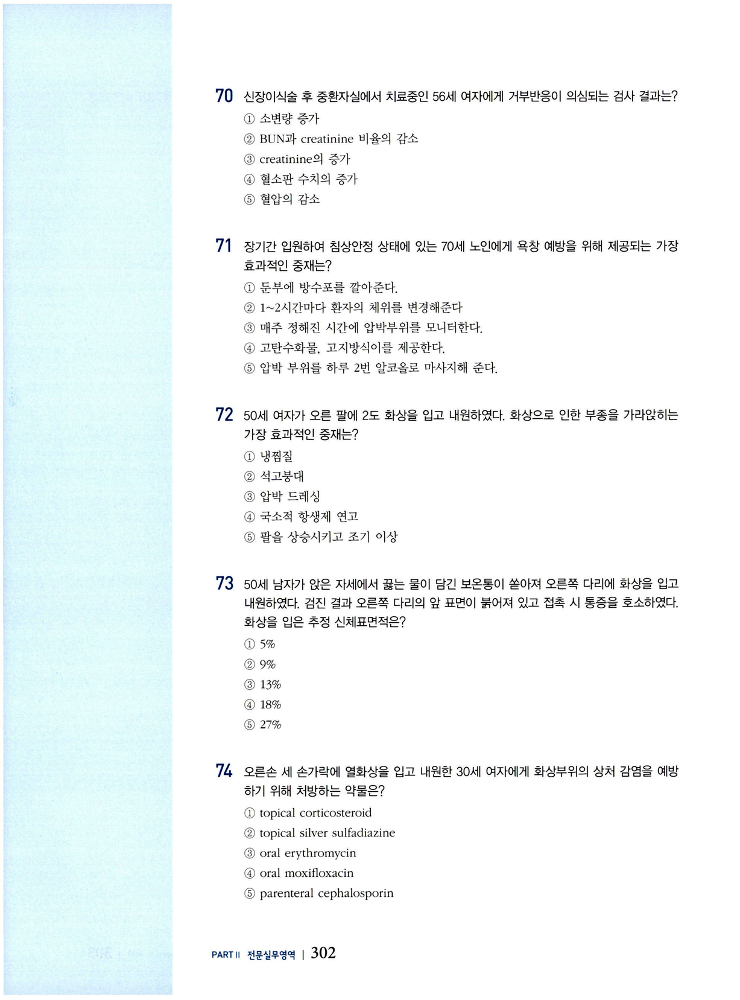

신장·혈액·면역·기타 문제
전문간호사 자격시험 대비 문제집 — 신장·혈액·면역·기타 (CHAPTER 11).
문 01 CKD 요독증
만성신장질환(CKD) 환자의 요독증(Uremia) 증상에 해당하지 않는 것은?
- 혈관의 경화
- 말초신경병증
- 고칼슘혈증
- 위장관계 출혈 위험 증가
- 빈혈 위험 증가
문 02 CKD 빈혈 중재
다음 중 만성신장질환(CKD) 환자에게 나타난 빈혈을 완화시키기 위한 가장 효과적인 중재는?
- Bicarbonate 투여
- 단백질 섭취 제한
- Erythropoietin 투여
- 고혈압 조절
- 철분섭취 강화
문 03 신혈류량
신장으로 유입되는 혈액량은 심박출량의 몇 %인가?
- 80%
- 40%
- 20~25%
- 10~15%
- 5%
문 04 CKD 임상진단검사
만성신장질환(CKD)을 진단하기 위한 임상진단검사에 대한 설명으로 옳은 것은?
- CKD를 정확히 진단하기 위해 조영제를 사용한 CT가 이용된다.
- CKD에서 일반적으로 신피질의 부종을 볼 수 있다.
- 소변에서 혈액이 검출되면 사구체 기능장애를 의미한다.
- 알부민:크레아티닌 비율이 30~299 mg/g일 때 미세알부민뇨로 판단한다.
- CKD 환자의 헤모글로빈 수치가 9~10 g/dL이면 악성빈혈로 진단한다.
문 05 혈액투석여과
혈액투석여과(hemodiafiltration)에 대한 설명으로 옳은 것은?
- 확산에 의해 혈액을 여과한다.
- 수분·전해질 수치가 급격하게 변하지 않아 심장 부담이 적다.
- 혈류속도가 최소 300 mL/min 이면 가능하므로 작은 혈관에 적용하기 쉽다.
- 저분자 용질 제거에는 유리하나 중분자 제거의 효과는 적다.
- 투석의 효과가 강하나 여과의 효과는 적다.
문 06 폐색전증 신기능 검사
빈맥, 빈호흡, 저혈압을 보이며 폐색전증이 의심되는 환자에게 신장 기능 손상 여부를 가장 신속히 확인할 수 있는 검사는?
- MRI
- 소변검사
- 폐혈관조영술
- V/Q perfusion scan
- 조영제를 이용한 폐 CT
문 07 신장 허혈성 손상
신장의 허혈성 손상이 시작되는 상황은?
- 40시간 이상 지속적으로 평균동맥압이 60 mmHg 이하
- 평균동맥압이 60 mmHg 이상이나 시간당 소변량이 30 mL 이하
- 60시간 이상 간헐적으로 수축기압이 100 mmHg 이하
- 수축기압이 100 mmHg 이하
- 이완기압이 60 mmHg 이하
문 08 신장이식 후 응급조치
신장이식을 받은 환자에게 나타나는 다음 상황 중 가장 신속한 조치가 요구되는 것은?
- PTT 20 sec
- 크레아티닌 감소
- 체온 38℃
- 혈당 260 mg/dL
- Hemoglobin 9.6 g/dL
문 09 사구체여과율 평가
환자의 사구체여과율을 평가하기 위한 가장 적절한 검사는?
- proteinuria
- serum creatinine
- serum amylase
- blood urea nitrogen (BUN)
- urine creatinine clearance
문 10 조영제 CT 후 간호
조영제가 주입된 CT 검사 후의 간호중재로 가장 중요한 것은?
- 적절한 수분 섭취를 강조한다.
- 항생제를 투약한다.
- 과량의 염분을 제공한다.
- 절대 침상안정을 유지한다.
- 활력징후를 15분마다 4회, 매시간 4회, 이후부터 4시간마다 측정한다.
문 11 급성신부전 검사결과
식도정맥류 파열 후 내원한 35세 남자가 상부위장관의 과도한 출혈을 보인 후 급성신부전 상태가 되었다. 다음 중 예상되는 임상검사 결과는?
- 낮은 요 삼투압, 요 중 높은 나트륨 비중
- 높은 요 삼투압, 요 중 높은 나트륨 비중
- 낮은 요 삼투압, 요 중 낮은 나트륨 비중
- 높은 요 삼투압, 요 중 낮은 나트륨 비중
- 낮은 요 삼투압, 요 중 나트륨 정상
문 12 furosemide 작용
다음 중 furosemide의 효과는?
- 수분을 세뇨관으로 끌어당기는 삼투압제제로 작용
- 헨레고리의 상행각에서 나트륨과 수분의 재흡수를 감소시킴
- 항이뇨호르몬(ADH)의 길항제로 작용
- aldosterone 길항제로 작용
- 집합관에서 칼륨 분비를 증가
문 13–14 횡문근융해증 (공유지문)
부엌에서 쓰러진 후 약 48시간 동안 움직일 수 없었던 상태에서 이송되어 온 50세 여자의 소변이 짙은 홍차색깔이다. myoglobin이 검출되었다. BUN은 52 mEq/L, 혈청 creatinine은 4.2 mEq/L, 혈청 포타슘은 5.6 mEq/L이다.
이 환자에게 신장손상을 최소화하기 위해 가장 우선적으로 처치되어야 하는 중재는?
- 루프계 이뇨제 투여
- sodium bicarbonate 1 ample 투여
- 0.9% 식염수를 투여하여 시간당 소변배출량을 300 mL로 유지
- 가능한 한 빨리 복막투석 실시
- sorbitol 구강투여
이 환자에게 나타날 것으로 예측되는 검사수치는?
- CK 30,000
- amylase 500
- troponin 12
- bilirubin 4.2
- BUN 10
문 15 다발성 장기손상 중재
다발성 장기손상을 입은 16세 남자의 검사결과 BUN 60 mEq/L, BP 98/50 mmHg이었다. 이 상황에서 제공되는 가장 적절한 중재는?
- 혈액투석
- 교질용액 bolus 투여
- 루프계 이뇨제
- 복막투석
- 지속적 신대체요법(CRRT)
문 16 ATN 원인
교통사고 후 ICU에서 치료 중인 26세 여자에게 2일째 급성세뇨관괴사(ATN)가 나타났다. 입원 시 혈압은 정상이었다면 다음 중 ATN을 초래한 원인으로 생각되는 것은?
- 출혈
- 횡문근융해증
- 크레아티닌 방출
- 부정맥
- 저혈당
문 17 신성 vs 신전성 감별
급성세뇨관괴사증이 발생하였을 때 신부전의 원인이 신장성(intrarenal)인지 신전성(prerenal)인지를 파악하기 위해 요구되는 검사는?
- 요비중
- 요삼투압
- BUN과 creatinine 비율
- 소변 전해질
- C-반응성 단백(C-reactive protein: CRP)
문 18 norepinephrine 효과
중증 패혈증 치료를 위해 수액요법(fluid resuscitation)을 받고 있는 환자의 평균동맥압(MAP)이 55 mmHg이고 norepinephrine이 처방되었을 때 예상되는 효과는?
- 신장관류액 유지
- 관상동맥 내 혈액흐름의 증가
- 정맥귀환율과 전부하(preload)의 증가
- 혈관긴장도와 후부하(afterload)의 회복
- 사구체여과율 증가
문 19 수액소생술 효과 지표
심한 탈수로 수액소생술(fluid resuscitation) 요법이 제공되는 환자에게 중재가 효과적임을 나타내는 지표는?
- CVP 2 mmHg
- HR가 감소함
- 맥압이 감소함
- 혈청 bicarbonate 16 mEq/L
- 소변량이 감소함
문 20 우선 사정 환자
다음 환자의 상태를 고려할 때 가장 우선적으로 사정해야 하는 환자는?
- 복수가 동반되지 않은 간경변증 환자
- 복수가 동반된 췌장염 환자
- 우측 신장이 촉진되는 환자
- 말초부종과 간염이 있는 환자
- 식사 직후 고창과 미열이 동반된 환자
문 21 체액불균형 민감 지표
다음 중 중증 환자의 체액불균형을 판단하기 위한 가장 민감성 높은 지표는?
- 체중
- I/O balance
- 환자사정
- 소변 내 전해질 수치
- 혈액검사 상 백혈구 수치
문 22 투석환자 폐색전증 검사
CHF, 고혈압, 당뇨병이 있는 70세 환자가 폐렴과 패혈증으로 ICU에서 약 2주간 치료받고 있으며 만성신장질환으로 투석도 진행 중이다. 갑자기 호흡곤란, 빈맥과 빈호흡을 호소하고 폐색전증이 의심될 때 다음 중 진단을 위해 요구되는 검사는?
- D-dimer
- chest X-ray
- 조영제를 투입한 CT 촬영
- ventilation/perfusion scan
- blood culture
문 23 ATN 다뇨기 간호
급성세뇨관괴사가 발생한 후 하루 4L의 소변을 배출하는 환자의 간호에서 가장 중요한 고려사항은?
- 수분섭취 제한
- 체액부족과 전해질 농도 사정
- 고장성 용액주입
- 이뇨제 주입
- 염분섭취 증가
문 24 CKD 가장 흔한 원인
현재 만성신장질환의 가장 일반적인 원인은?
- 조절되지 않는 당뇨
- 패혈증
- 급성사구체신염
- 신정맥혈전증
- 고혈압
문 25 조영제 급성신손상 결과
조영제 부작용으로 급성신손상을 입은 환자에게 예상되는 임상결과는?
- BUN 20, creatinine 0.9
- BUN 47, creatinine 3.8
- BUN 60, creatinine 1.5
- BUN 90, creatinine 2.5
- BUN 110, creatinine 5.2
문 26 소변 착색 약물
60세 여자가 요로감염으로 항생제를 복용하던 중 혈뇨가 나온다고 호소하여 내원하였다. 다음 약물 중 소변을 오렌지색으로 착색시켜 혈뇨처럼 혼돈할 수 있는 작용이 있는 약물은?
- Nitrofurantoin
- Ampicillin
- Fluoroquinolones
- Phenazopyridine
- Trimethoprim
문 27 말기신장질환 특징
말기신장질환의 특징을 설명한 것은?
- 네프론 기능이 약 90% 소실
- 혈청 creatinine이 3.0 mg/dL 이상
- BUN 60 mg/dL
- 요의 농축도 감소
- 지속적인 혈뇨
문 28 급성신부전 다뇨기 전해질
급성신부전을 진단 받은 후 환자가 하루 4L의 소변을 배출하고 있을 때 사정해야 할 전해질 불균형은?
- 고칼륨혈증, 저나트륨혈증
- 저나트륨혈증, 저칼륨혈증
- 고칼륨혈증, 고나트륨혈증
- 고칼슘혈증, 저나트륨혈증
- 저칼슘혈증, 고나트륨혈증
문 29 신전성 신부전 원인
급성신부전의 원인 중 신전성(prerenal) 요인에 해당하는 것은?
- 급성사구체신염
- 양성 전립선비대증
- 조영제 사용
- 부정맥
- 결석
문 30 신증후군 식이
단백뇨와 부종이 관찰되어 스테로이드 고용량치료를 받고 있는 신증후군 환자에게 권장되는 식이에 대한 설명으로 옳은 것은?
- 수분 섭취 권장
- 엄격한 열량제한 식이
- 단백질 섭취 적정량 유지
- 동물성 지방 섭취 권장
- 염분과 포타슘 섭취 권장
문 31 RAAS 활성화 요인
다음 중 레닌-안지오텐신-알도스테론 체계를 활성화 시키는 요인은?
- 저칼륨혈증
- 저나트륨혈증
- 체액량 과다
- BUN과 creatinine 비율의 증가
- 평균동맥압 저하와 신동맥 저혈압
문 32 고칼륨혈증 ECG
급성신부전으로 진단받은 환자의 심전도에서 QRS 폭이 넓어지고 T파가 높아지는(peaked T wave) 양상을 보일 때 어떤 전해질의 불균형이 있는 것으로 볼 수 있는가?
- 저칼륨혈증
- 고인산혈증
- 고칼륨혈증
- 고염소혈증
- 저칼슘혈증
문 33 무뇨 시 우선조치
중환자실에서 치료 중인 환자에게 유치도뇨관이 삽입되어 있으나 지난 2시간 동안 소변이 배출되지 않았다면 가장 먼저 취해야 할 조치는?
- 추후 처방을 위해 주치의에게 연락
- 도뇨관 제거
- 정맥수액주입량 증가
- 환자의 의식 확인
- 도뇨관의 개방성 확인
문 34–36 수혈 용혈반응 (공유지문)
수혈이 시작된 직후, 환자가 짧은 호흡과 가슴통증을 호소하고 있다. 활력징후는 BP 100/56, PR 110, RR 22, 체온 38.7℃이다. 이후 헤모글로빈뇨증(hemoglobinuria)과 홍차색 소변을 보였다.
이 상황에서 간호사가 즉각적으로 해야 하는 것은?
- 나이트로글리세린 설하투여
- 주치의에게 연락
- 수혈을 즉각적으로 중단
- 지지적인 간호 제공하면서 활력징후를 지속적으로 관찰
- 생리식염수를 즉각적으로 정맥투여
이 상황은 혈액의 어떤 반응이 나타난 것인가?
- 용혈반응
- 아나필락틱반응
- 발열반응
- 순환성 과부하
- 치료적 반응
이 상황에서 기술된 수혈반응이 나타난 원인은?
- 수혈된 혈액의 혈장단백질에 대한 알레르기반응
- 공여자의 백혈구에 대한 환자의 항체반응
- 환자의 혈액형과 일치하지 않는 혈액의 수혈
- 혈액이 너무 빨리 주입되었기 때문
- 약화된 신체 상태로 인한 과민반응
문 37 다발성 장기부전 지표
다음 중 다발성 장기부전을 나타내는 결과는?
- 시간당 소변량 30 mL 이하, BUN 18 mg/dL, WBC 5,120
- 상부 위장관 출혈, GCS점수 15, Hct 25%
- 총 빌리루빈 15 mg/dL, 혈청 creatinine 8 mg/dL, 혈소판 2,300 mm³
- 분당 호흡수 45회, PaCO₂ 60 mmHg, 희미하게 투영된 흉부 X-ray
- 고혈압, 빈맥, 빈호흡
문 38 외상 후 생명위협 합병증
25세 남자가 교통사고로 인한 다발성손상으로 12시간 동안 수술을 받은 후 ICU에서 기관내 삽관, 기계적 환기, 여러 번의 수혈을 받았다. 이러한 외상을 입은 환자에게 나타날 수 있는 생명을 위협하는 합병증의 초기 징후는?
- 알칼리증, 고혈압, 위장관 운동저하
- 산증, 저체온, 폐부종
- 저혈압, 부정맥, 폐부종
- 출혈, 감염, 피부긴장도 감소
- 알칼리증, 고혈압, 피부긴장도 감소
문 39 탈수 vs 신부전 감별
53세 여자가 지난 3일간 오심과 구토가 지속됨을 호소하다 응급실로 내원하였는데, 초기 혈액검사에서 BUN 28, creatinine 1.0, K+ 5.9, Hct 58이었다. 의식은 명료하며 지난 이틀간 소량의 액체류만 섭취할 수 있었다고 할 때 예상되는 상황은?
- 급성신부전
- 만성신부전
- 탈수
- 급성세뇨관괴사
- 급성사구체신염
문 40 고칼륨혈증 ECG 변화
고칼륨혈증에서 나타나는 심전도의 변화는?
- 넓어진 QRS 폭, ST 상승, 넓어진 PR 간격
- QT 지연, 서맥
- U파 출현, ST 하강, 심실빈맥
- 빈맥, 심실부정맥
- 넓어진 T파, ST 하강, 좁아진 PR 간격
문 41 erythropoietin 생성부위
적혈구생성 촉진인자(erythropoietin)의 약 90%가 만들어지는 곳은?
- 골수
- 신장
- 간
- 폐
- 뼈의 말단부
문 42 SIRS vs sepsis
전신성 염증반응증후군(Systemic Inflammatory Response Syndrome; SIRS)과 패혈증(sepsis)의 차이를 가장 잘 설명한 것은?
- 감염이 동반되면 SIRS이다.
- 맥박과 호흡이 낮아지면 sepsis이다.
- 체온상승은 SIRS에서만 나타난다.
- 빈맥은 sepsis에서만 나타난다.
- 혈액배양검사에서 양성이면 sepsis이다.
문 43 신부전 대사성 산증
신부전 환자의 ABGA 검사 결과 pH 7.32, PaCO₂ 35, HCO₃ 18로 나왔다. 이러한 산염기 불균형이 초래된 이유는?
- 호흡을 통한 이산화탄소의 배출 저하
- 신장을 통한 중탄산이온의 배출 저하
- 신장을 통한 칼슘이온의 배출 증가
- 호흡을 통한 나트륨이온의 배출 증가
- 신장을 통한 대사성 산물인 산의 배출 저하
문 44 고칼륨혈증 응급중재
환자의 혈청 K 수치가 8.8 mEq/L이며, 심전도에서 QRS가 넓어지고 서맥을 보일 때 가장 적절한 응급 중재는?
- Kayexalate 관장
- Calcium gluconate, glucose, insulin 정맥투여
- sorbitol 구강투여
- 혈액투석
- Furosemide 투여
문 45–46 HIT (공유지문)
58세 여자가 심부정맥혈전증(DVT)과 폐색전으로 내원하였다. 환자는 헤파린 bolus를 투여 받고 지속적인 헤파린 주입치료를 받고 있다. 다음날 헤파린에 의한 혈소판감소증이 나타났고 헤파린 주입이 중단되었다.
다음 중 헤파린에 의한 혈소판감소증이 의심되는 상황은?
- 정맥주사 주입부위 주변 출혈
- PTT 50 secs
- 맥박소실, INR 5
- 점상출혈, 혈소판 수치 50,000/mm³
- 의식수준의 변화, bilirubin 7 mg/dL
이 환자가 추후 색전의 위험으로부터 폐를 보호하기 위해 이틀 후에 Greenfield 필터 주입이 예정되어 있다. 사전검사 결과 혈소판 수치가 20,000/mm³이었다면 가장 적절한 중재는?
- 추가처방을 위해 주치의에게 검사결과를 보고함
- 굵은 사이즈로 여분의 IV line을 확보함
- 신경학적 상태를 주의 깊게 관찰함
- 항응고제 argatroban을 중단함
- 배뇨상태를 주의 깊게 관찰함
문 47 DIC 의심 소견
패혈성쇼크가 있는 환자에게 나타난 다음 상황에서 파종성혈관내응고(DIC)가 생긴 것으로 의심되는 것은?
- ELISA 양성
- 혈소판 수치 감소
- 지연된 PR, PTT, bleeding time
- 감소된 hemoglobin과 hematocrit
- 섬유소분해산물과 D-dimer의 증가
문 48 중독 환자 초기중재
약물의 종류에 상관없이 중독 환자에게 제공되는 초기 중재의 목적은?
- 약물의 배출을 증가
- 적절한 때에 해독제를 투여
- 추가적인 약물의 흡수를 방지
- 환자의 기도확보와 적절한 호흡을 유지
- 환자의 의식사정과 지남력 유지
문 49 헤파린→와파린 전환
과응고장애(hypercoagulation disorder)를 진단받은 환자에게 헤파린을 정맥투여하고 있다. 와파린 치료를 시작할 예정이라면 헤파린 주입을 중단하는 시점은?
- 환자가 퇴원할 때
- ICU에서 일반병실로 이동할 때
- 와파린 치료를 받으면서 치료적 INR에 이를 때
- 와파린 경구투여가 시작되었을 때
- 경구섭취가 가능하여 영양섭취를 보충할 수 있을 때
문 50 젖산농도 상승 해석
입원 후 환자의 젖산농도가 8시간 동안 2 mmol/L에서 6 mmol/L로 상승했다면 어떤 상황이라고 판단되는가?
- 적절한 수액치료가 진행 중이다.
- TPN 요법을 즉시 시작할 필요가 있다.
- 조직관류가 부적절한 상태이다.
- 신선동결혈장 20 units을 즉시 수혈해야 한다.
- 알부민을 즉시 보충할 필요가 있다.
문 51 Coumadin 과량 출혈
복부 수술 후 Coumadin을 처방받아 퇴원한 60세 환자가 혈뇨가 보인다며 응급실로 내원하였다. INR 2.1, Hgb 9.5, Hct 29%일 때 다음 중 초기치료로 적용될 수 있는 것은?
- FFP 주입
- 동결혈장수혈
- 혈소판 수혈
- 비타민 K 주입
- 전혈 수혈
문 52 혈소판감소증 기여요인
55세 남자가 지난 5일간 선홍색 토혈을 하고 어제부터는 검은 변이 나온다고 호소하여 내원하였다. 과거에는 출혈병력이 없었다고 한다. 제2형 당뇨를 진단받았고 관절염이 있다. 매일 2~4정의 아스피린을 관절염 통증조절을 위해 복용한다고 하였다. 매일 맥주를 8병에서 10병정도 마시며 이전에 알코올중독으로 진단받은 적이 있다. 신체검진 결과 창백하고 피부긴장도가 감소하였으며 상지와 허벅지 부분에 반상출혈이 관찰되었다. 심장과 폐, 복부검진결과는 정상이다. 초기 혈액검사에서 hemoglobin 7.0 g/dL, hematocrit 20%, platelet 75,000/mm³, INR 2.0, PT 18.0, PTT 50이었다.
다음 지문의 사정요소 중 환자에게 발생한 혈소판감소증의 기여요인으로 생각되는 것은?
- 남성
- 제2형 당뇨
- 관절염
- 알코올중독
- 아스피린의 습관적 복용
문 53 DIC 즉각조치 검사
파종성혈관내응고증(DIC)이 있는 환자에게 즉각적인 조치가 필요한 검사 결과는?
- International Normalized Ratio (INR) 2.0
- 혈소판 8,000
- aPTT 60초
- fibrinogen 300 mg/dL
- PTT 40초
문 54 이식증(pica)
32세 여자가 먼지나 테이프 등 먹을 수 없는 것들을 먹고 싶은 이상 충동증세를 보이고 있다. 다음 중 이런 행동을 유발할 가능성이 가장 높은 것은?
- 파종성혈관내응고
- 혈소판감소증
- 철분결핍성 빈혈
- 겸상적혈구 빈혈
- 백혈구감소증
문 55 DIC 즉각관리 상태
다음 중 파종성혈관내응고증을 진단받은 환자에게 즉각적인 관리가 필요한 상태는?
- 체온이 39℃일 때
- 짙은 색 소변을 보일 때
- 환자의 의식이 저하될 때
- 환자가 침상 밖으로 나오길 원할 때
- 환자가 손발 저림을 호소할 때
문 56 DIC 섬유소용해능 사정
파종성혈관내응고증을 가진 환자의 섬유소 용해능(fibrinolytic activity)을 사정할 때 다음 중 주의 깊게 관찰해야 하는 결과는?
- 혈소판
- 헤모글로빈과 헤마토크릿
- 프로트롬빈 시간과 INR
- 피브린 분해산물
- 적혈구 수치
문 57 혈우병 수혈 성분
혈우병과 같은 응고인자결핍이 있는 환자가 다음 중 어떤 성분을 수혈 받는 것이 도움이 되는가?
- 농축적혈구(packed red blood cells)
- 전혈
- 신선한 동결혈장
- 혈소판
- 백혈구
문 58 횡문근융해증 즉각처치
횡문근융해증을 진단받은 환자의 검사결과 중 즉각적인 처치가 요구되는 것은?
- BUN 50 mg/dL
- creatinine 2.0 mg/dL
- potassium 6.9 mEq/L
- calcium 7.5 mg/dL
- sodium 138 mEq/L
문 59 혈소판감소증 수혈성분
다음 중 혈소판감소증 시 투여되어야 하는 혈액성분으로 가장 적절한 것은?
- 전혈
- 신선한 동결혈장
- 혈소판
- 적혈구
- 백혈구
문 60 혈액세포 전구체
모든 혈액세포의 기본적인 전구체는?
- 거핵세포(megakaryocyte)
- 망상적혈구(reticulocyte)
- 줄기세포(stem cell)
- 과립구(granulocyte)
- 원시세포(archaeocytes)
문 61 만성질환 빈혈 기전
만성 질환으로 염증반응을 보이는 노인 환자에게 빈혈이 발생되는 주요 기전은?
- 식욕부진에 의한 철, 칼슘, 비타민 C의 부족
- 위장관계 잠행성 출혈로 인한 만성 철분 부족
- 복합질환에 의한 염증성 시토카인의 증가
- 조절되지 않는 당뇨와 이에 따른 신장질환
- 침상안정과 부동으로 인한 대사작용 저하
문 62 AB형 혈액형
AB형 혈액형을 가진 환자에 대한 설명으로 옳은 것은?
- A형 또는 B형 혈액의 항원을 갖고 있다.
- A형과 B형 혈액에 대한 항체를 갖고 있다.
- A형 혈액을 가진 사람에게 혈액을 공여할 수 있다.
- 모든 혈액형으로부터 수혈 받을 수 있다.
- O형 혈액형을 가진 사람에게 혈액을 공여할 수 있다.
문 63 아나필락시스 응급중재
항생제를 정맥투여한 직후 환자가 천명음을 동반한 짧은 호흡, 두드러기, 저혈압을 보이고 있다. 이 경우 환자안전을 위해 가장 즉각적으로 수행해야 하는 중재는?
- 비재호흡마스크(non-rebreather mask)를 통한 산소공급
- 에피네프린 피하투여
- 교질용액 bolus 투입
- 알레르기원의 제거
- 주입속도를 줄임
문 64 히스타민 방출세포
다음 중 염증반응을 자극하는 히스타민을 방출하는 세포는?
- 비만세포
- T cells
- B cells
- 단핵구
- B helper cells
문 65 AIDS 호전 지표
Antiretroviral therapy를 받고 있는 후천성 면역결핍질환(AIDS) 환자의 상태가 호전되었다고 판단할 수 있는 상황은?
- CD4+ T cell 수 감소
- aminotransferase 수치의 증가
- 약물 저항력 증가
- Viral load의 감소
- Wasting syndrome의 발현
문 66 HLA 항체 연관질환
다음 중 인체조직적합항원(HLA) 항체의 역할과 밀접하게 연관되어 있는 질환은?
- Malignancies
- Infectious disease
- Neurologic disease
- Autoimmune disorders
- Gastrointestinal disease
문 67 HIV 양성 해석
25세 여자가 최근 체중감소, 원인모를 설사, 전신피로감, 발열의 증상으로 내원 후 HIV assay를 실시한 결과 HIV 항체 양성, CD4 T cell이 500 cells/μL로 나타났다. 이 상황에 대한 적절한 설명은?
- AIDS라고 확진할 수 있다.
- AIDS에 대한 면역력을 가지고 있다고 볼 수 있다.
- 감염을 전파시킬 위험이 있다.
- 정확한 진단을 위해 성병검사를 추가로 실시해야 한다.
- Antiretroviral therapy를 통해 완치될 수 있는 가능성이 높다.
문 68 2차 면역반응 항체
한번 노출된 경험이 있는 항원에 다시 재차 노출되었을 때 급격히 증가하는 면역글로불린은?
- IgA
- IgM
- IgE
- IgG
- IgD
문 69 이식 전 면역검사
이식수술 전 수행해야 하는 수여자와 공여자 간의 면역검사는?
- ABO 적합성만 평가
- ABO 및 HLA 적합성 모두
- HLA 적합성만 평가
- ABO, Rh, HLA 적합성 모두 평가
- Rh, HLA 적합성 평가
문 70 신장이식 거부반응
신장이식술 후 중환자실에서 치료 중인 56세 여자에게 거부반응이 의심되는 검사 결과는?
- 소변량 증가
- BUN과 creatinine 비율의 감소
- creatinine의 증가
- 혈소판 수치의 증가
- 혈압의 감소
문 71 욕창 예방 중재
장기간 입원하여 침상안정 상태에 있는 70세 노인에게 욕창 예방을 위해 제공되는 가장 효과적인 중재는?
- 둔부에 방수포를 깔아준다.
- 1~2시간마다 환자의 체위를 변경해준다.
- 매주 정해진 시간에 압박부위를 모니터한다.
- 고탄수화물, 고지방식이를 제공한다.
- 압박 부위를 하루 2번 알코올로 마사지해 준다.
문 72 화상 부종 중재
50세 여자가 오른 팔에 2도 화상을 입고 내원하였다. 화상으로 인한 부종을 가라앉히는 가장 효과적인 중재는?
- 냉찜질
- 석고붕대
- 압박 드레싱
- 국소적 항생제 연고
- 팔을 상승시키고 조기 이상
문 73 화상 체표면적
50세 남자가 앉은 자세에서 끓는 물이 담긴 보온통이 쏟아져 오른쪽 다리에 화상을 입고 내원하였다. 검진 결과 오른쪽 다리의 앞 표면이 붉어져 있고 접촉 시 통증을 호소하였다. 화상을 입은 추정 신체표면적은?
- 5%
- 9%
- 13%
- 18%
- 27%

문 74 화상 감염예방 약물
오른손 세 손가락에 열화상을 입고 내원한 30세 여자에게 화상부위의 상처 감염을 예방하기 위해 처방하는 약물은?
- topical corticosteroid
- topical silver sulfadiazine
- oral erythromycin
- oral moxifloxacin
- parenteral cephalosporin
문 75 화상 초기대응
30세 여자가 오른손에 열화상을 입고 응급실에 내원하였다. 손가락에 수포가 보이며 통증을 호소할 때 가장 적절한 초기대응 방안은?
- 화상특화병원(병동)으로 의뢰한다.
- 예방적 항생제를 복용하도록 한다.
- 화상부위에 마취연고(anesthetic cream)를 바르고 수포를 터뜨린다.
- 화상부위를 느슨하게 드레싱으로 감은 후 진통제를 처방해 준다.
- 화상부위에 silver sulfadiazine cream(Silvadene)을 바르고 두껍게 드레싱을 한다.
문 76 수포 용어
손에 2도 화상을 입어 내원한 환자의 피부를 관찰한 결과 2~3 cm 정도 맑은 액체가 들어 있는 병변이 관찰되었다면 이 병변을 칭하는 용어는?
- vesicles
- bullae
- cysts
- wheals
- urticaria